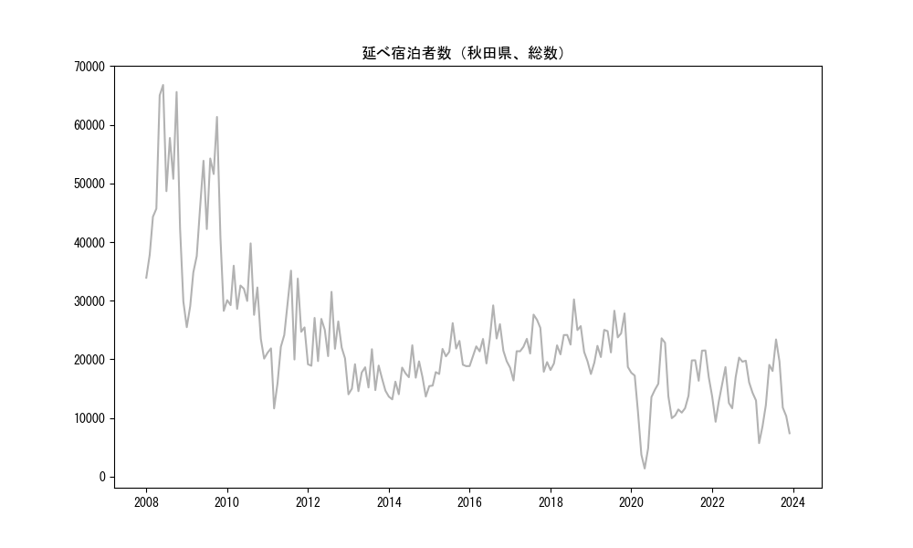
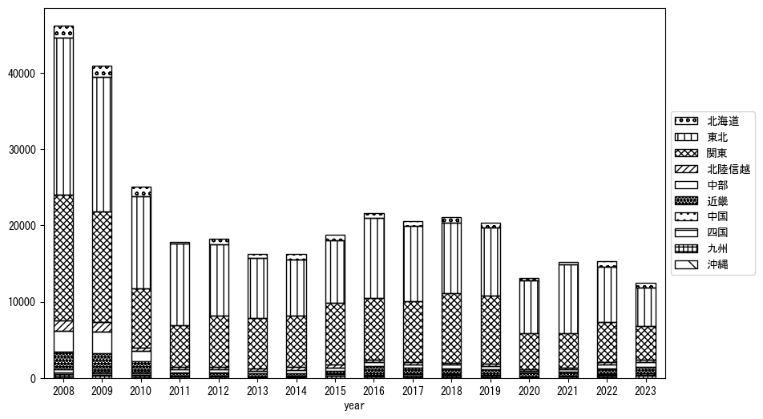
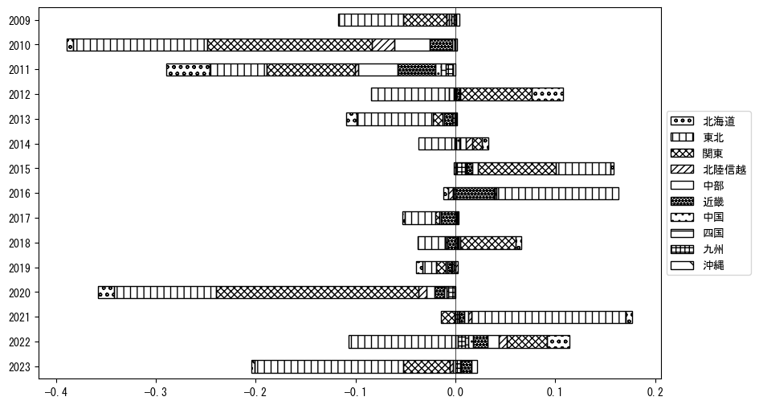
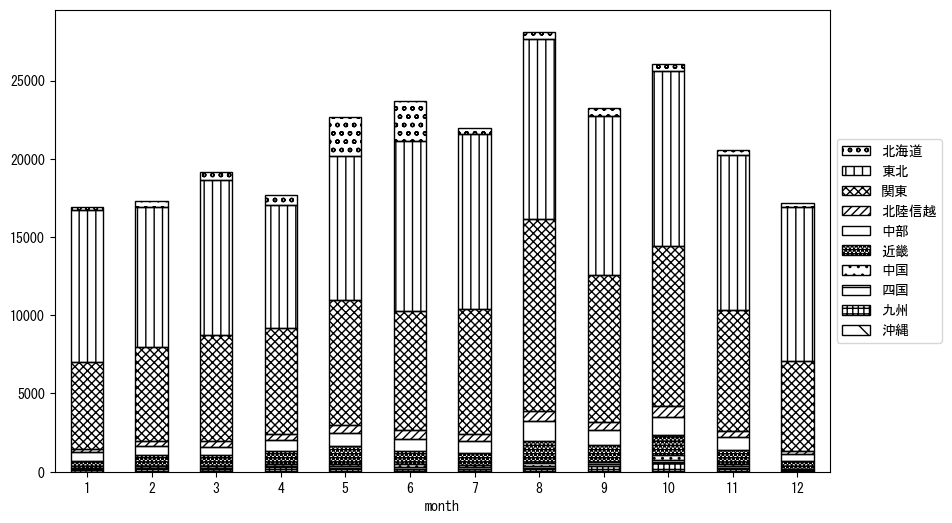
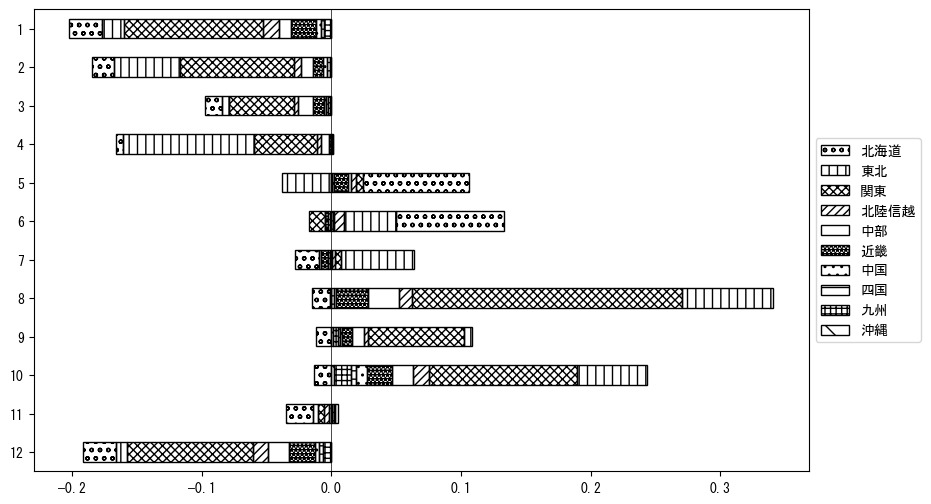

-
トップ
-
秋田県
秋田県
１．延べ宿泊者（総数）の推移
時系列グラフ

図１：秋田県内の従業員数100人以上の宿泊施設での延べ宿泊者数（国外、居住地不詳を含む総数）。
基本統計量
表１：従業員数100人以上の宿泊施設での延べ宿泊者の総数（国外、および居住地不詳を含む）に関する基本統計量。単位は人。平均は１か月あたりの平均値を表す。図１に対応。
| 2008年 |
49,050 |
12,509 |
29,859 (12月) |
66,782 (6月) |
| 2009年 |
42,097 |
11,564 |
25,493 (1月) |
61,329 (10月) |
| 2010年 |
30,148 |
5,178 |
20,126 (12月) |
39,779 (8月) |
| 2011年 |
23,787 |
6,760 |
11,640 (3月) |
35,124 (8月) |
| 2012年 |
23,277 |
4,024 |
18,915 (2月) |
31,514 (8月) |
| 2013年 |
16,772 |
2,448 |
14,044 (1月) |
21,737 (8月) |
| 2014年 |
16,655 |
2,763 |
13,187 (2月) |
22,405 (8月) |
| 2015年 |
19,920 |
3,168 |
15,443 (1月) |
26,181 (8月) |
| 2016年 |
22,440 |
2,978 |
18,864 (1月) |
29,209 (8月) |
| 2017年 |
21,797 |
3,506 |
16,395 (2月) |
27,632 (8月) |
| 2018年 |
22,786 |
3,322 |
18,184 (1月) |
30,225 (8月) |
| 2019年 |
22,809 |
3,474 |
17,502 (1月) |
28,294 (8月) |
| 2020年 |
13,367 |
7,071 |
1,393 (5月) |
23,598 (10月) |
| 2021年 |
15,360 |
4,504 |
9,977 (1月) |
21,524 (11月) |
| 2022年 |
15,596 |
3,602 |
9,365 (2月) |
20,308 (9月) |
| 2023年 |
13,625 |
5,428 |
5,727 (3月) |
23,403 (8月) |
２．宿泊者数の重心（年平均の推移）
図２：秋田県内の従業員数100人以上の宿泊施設での宿泊者数（国外、居住地不詳を除く）の重心（年平均の推移）。
全画面表示
重心の前年平均からの移動距離と方位、および緯度・経度
表２：重心の前年平均からの移動距離と方位、および緯度・経度。図２に対応。
| 2008年 |
— |
— |
37.6165 |
139.5215 |
| 2009年 |
南南西 |
7.4km |
37.5604 |
139.4754 |
| 2010年 |
北 |
26.2km |
37.7950 |
139.4408 |
| 2011年 |
東北東 |
35.1km |
37.9124 |
139.8110 |
| 2012年 |
北東 |
1.6km |
37.9210 |
139.8257 |
| 2013年 |
南 |
19.4km |
37.7467 |
139.8103 |
| 2014年 |
南西 |
5.8km |
37.7055 |
139.7702 |
| 2015年 |
南西 |
14.4km |
37.5979 |
139.6781 |
| 2016年 |
北北西 |
13.5km |
37.7098 |
139.6182 |
| 2017年 |
南 |
5.1km |
37.6639 |
139.6134 |
| 2018年 |
南 |
12.1km |
37.5553 |
139.6245 |
| 2019年 |
南南東 |
5.6km |
37.5070 |
139.6415 |
| 2020年 |
北北東 |
22.9km |
37.7090 |
139.6962 |
| 2021年 |
北 |
34.3km |
38.0162 |
139.7335 |
| 2022年 |
南西 |
36.8km |
37.7439 |
139.4958 |
| 2023年 |
南西 |
40.6km |
37.4570 |
139.2108 |
運輸局別延べ宿泊者数
時系列（年平均）

図３：秋田県内の従業員数100人以上の宿泊施設での１か月あたり平均宿泊者数（国外、居住地不詳を除く）の運輸局別内訳。
寄与度（前年からの変化率に対する）

図４：秋田県内の従業員数100人以上の宿泊施設での運輸局別宿泊者数（国外、居住地不詳を除く）から求めた寄与度。
３．宿泊者数の重心（月別）
図５：秋田県内の従業員数100人以上の宿泊施設での宿泊者数（国外、居住地不詳を除く）の重心（月別）。観測期間は2008年1月から2023年12月まで。
全画面表示
全期間（2008年1月～2023年12月）の平均と月別平均の比較
表３：全期間の平均から月別平均までの移動距離と方位、および緯度・経度。図５に対応。
| 全期間 |
— |
— |
37.7011 |
139.6229 |
| 1月 |
北北東 |
34.7km |
37.9883 |
139.7793 |
| 2月 |
北 |
8.2km |
37.7748 |
139.6270 |
| 3月 |
北北東 |
12.6km |
37.8002 |
139.6926 |
| 4月 |
南南西 |
19.5km |
37.5517 |
139.5072 |
| 5月 |
北 |
34.6km |
38.0094 |
139.6829 |
| 6月 |
北北東 |
47.9km |
38.1087 |
139.8006 |
| 7月 |
東 |
4.8km |
37.7019 |
139.6775 |
| 8月 |
南 |
46.1km |
37.2923 |
139.5330 |
| 9月 |
南南西 |
36.9km |
37.3788 |
139.5193 |
| 10月 |
南南西 |
52.6km |
37.2937 |
139.3180 |
| 11月 |
南南西 |
18.4km |
37.5404 |
139.5736 |
| 12月 |
北北東 |
32.6km |
37.9727 |
139.7641 |
運輸局別延べ宿泊者数
月別平均（2008年1月～2023年12月）

図６：秋田県内の従業員数100人以上の宿泊施設での宿泊者数（国外、居住地不詳を除く）の運輸局別内訳（月別）。
寄与度（全期間の平均から月別平均への変化率に対する）

図７：秋田県内の従業員数100人以上の宿泊施設での運輸局別宿泊者数（国外、居住地不詳を除く）から求めた寄与度（月別）。
４．データのダウンロード
出典：観光庁「宿泊旅行統計調査」に収録された「施設所在地別、居住地別延べ宿泊者数（従業員数100人以上の施設）」
国土地理院「白地図（地理院タイル）」（図２と図５）